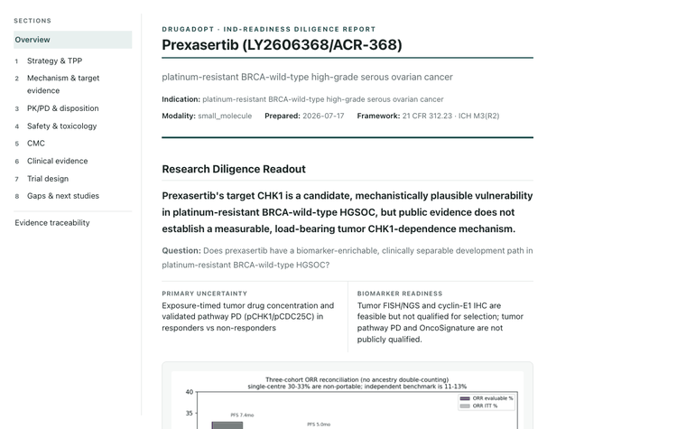

DrugAdopt
FlagshipGive us a drug and an indication. DrugAdopt works the public evidence across the eight modules an IND has to answer and returns a report that states where the evidence is sufficient, where it falls short, and the source behind every call. A bioinformatician reviews the output and signs it.
